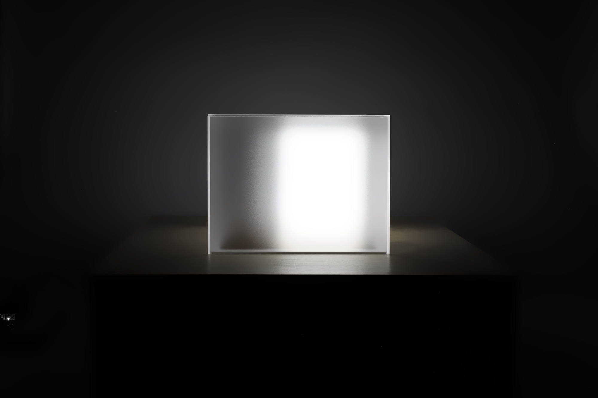

Larry
Mixed-media sculpture.

Larry is a mixed-media sculpture wherein a cubic volume endlessly wanders within a larger translucent box without ever fully aligning with it. A concealed mechanism causes the interior object to move in small, intermittent shifts — a seemingly aimless, strangely overperforming printer-like stutter followed by long periods of stillness and occasional longer transitions. The translucent outer form maintains a familiar monolithic composure, but over time the internal motion introduces subtle misalignments between appearance and behavior. What seems a stable and familiar form on a cursory glance is, in fact, continually adjusting and never settling.
Larry's endless random walk.